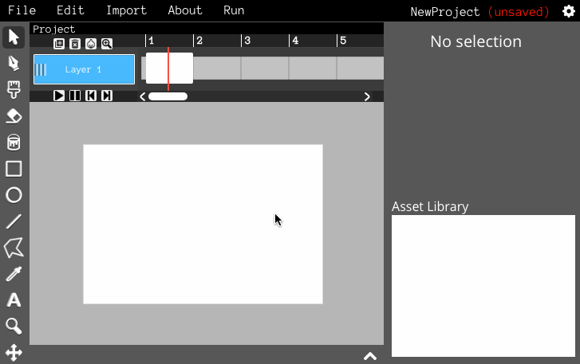
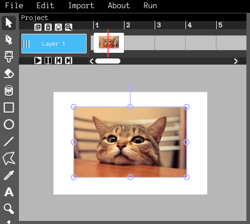
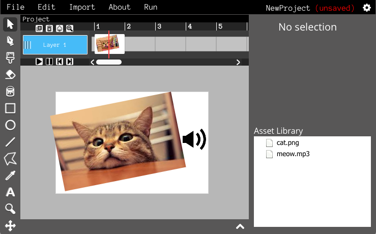

Importing your own images and sounds is pretty simple! To import an image, just click "Import" in the menu bar and select "Image".
Select the file you want to import, and press OK. You should now see the image in your project.
In the example, there's an image of a cat. Let's make the cat make a sound! Importing sounds is the same as importing images - click the "Import" button and select "Sound". After you import your sound file, a sound icon will appear in your project.
Now if you run your project, the sound will play!
You'll also notice that the files you imported show up in the "Asset Library". This is a list of all the files you've imported into your project - it's helpful for keeping track of everything in your project.